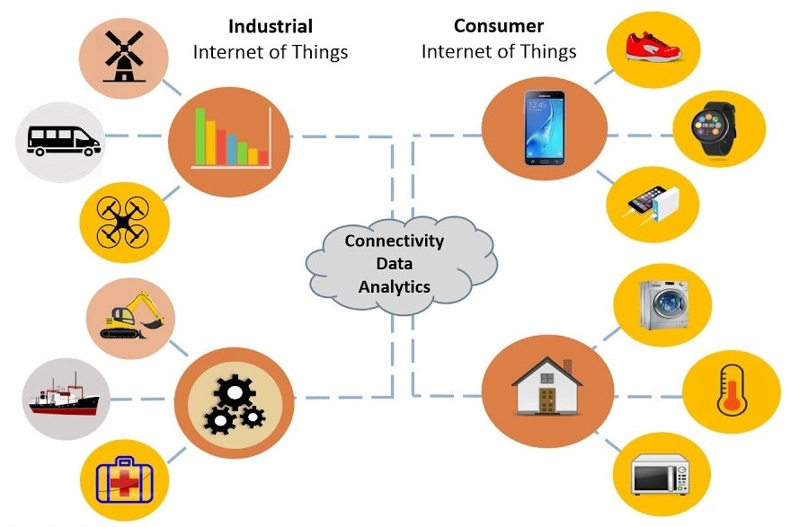
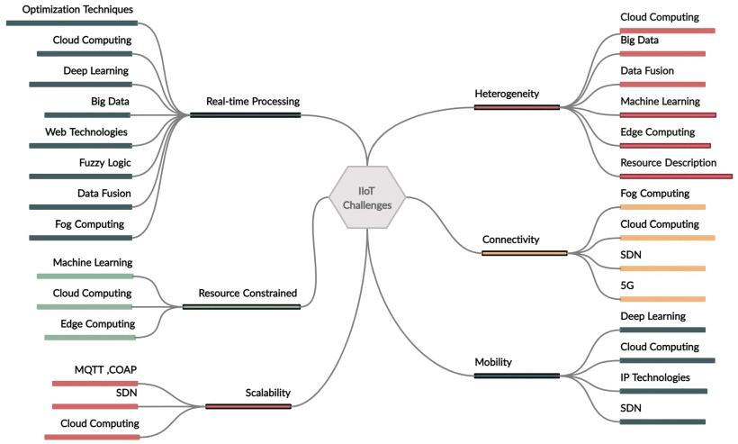
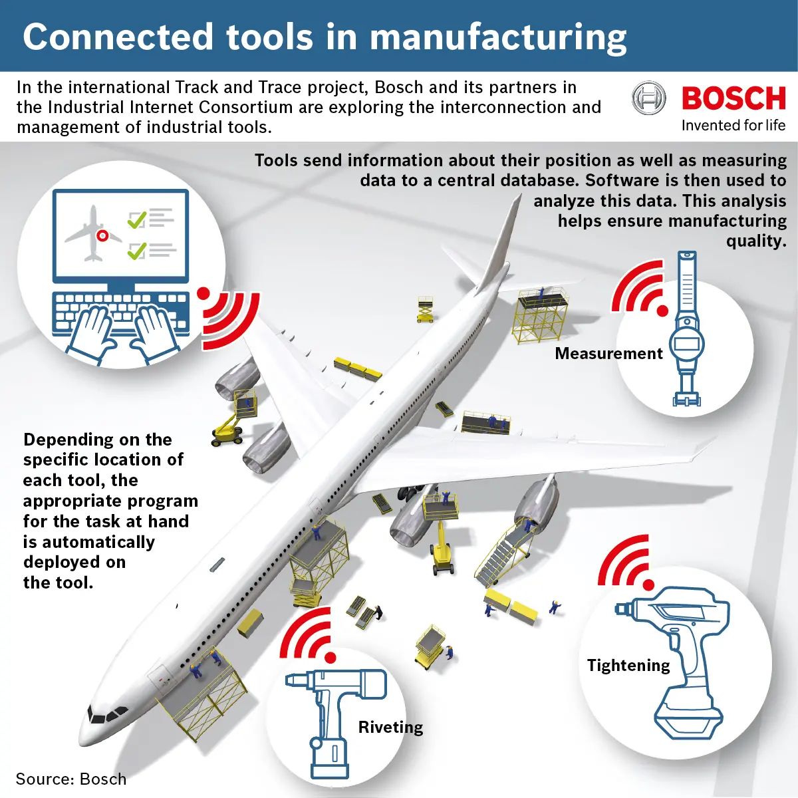
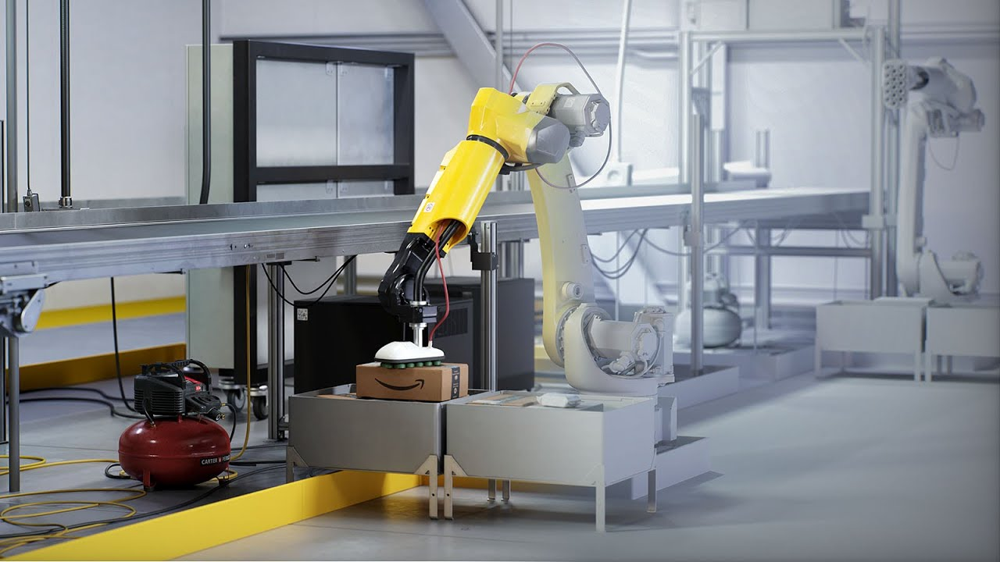
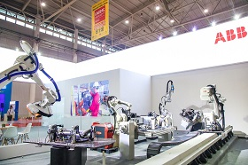
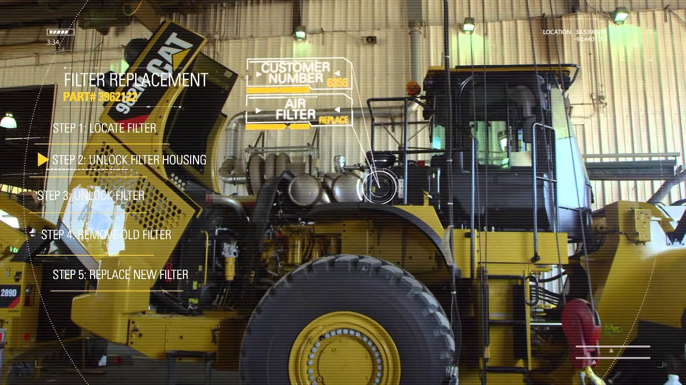

Introduction
The IIoT represents the convergence of industrial operations with the power of the Internet and advanced computing capabilities. It encompasses a vast network of interconnected devices, machinery, and systems embedded with sensors, actuators, and software applications that communicate and exchange data in real-time. The IIoT is a development of the distributed control system (DCS), which makes use of cloud computing to enhance and optimize the process controls, thus allowing a greater level of automation [1, 2].
IoT vs IIoT
IoT (Internet of Things) and IIoT (Industrial Internet of Things) are both technologies that involve the interconnectivity of devices, but they have distinct applications and focuses.
IoT is centered around consumer-oriented applications and involves the networking of everyday objects, such as smart home devices and wearable technology, to collect and exchange data over the internet.
IIoT extends the concept of IoT to industrial settings, integrating IoT technologies into manufacturing, energy, transportation, and other industrial sectors. IIoT aims to optimize industrial processes, improve operational efficiency, and enhance productivity through real-time data monitoring, analysis, and automation.
In essence, while IoT targets consumer applications, IIoT is tailored specifically for industrial environments, driving advancements in manufacturing, logistics, energy, and other industrial sectors through the integration of IoT technologies.
Objectives of IIoT
- Collection of data related to industrial manufacturing, transport or distribution processes.
- Real-time management of the physical resources of a productive company.
- Optimizing manufacturing processes, material consumption, material and human resources.
- Maintenance of manufacturing processes.
- Data security regarding manufacturing processes.
- Monitoring of pollution factors (emissions of CO2, SO2, nitrates, etc.).
- Support for: smart cities, smart transport, monitoring of environmental factors, computerized medical services (eHealth), smart administration (eGovernance), etc.
- Sustainability and Circular Economy - waste becomes raw material for the next manufacturing cycle.
The intersections of IoT, IIoT, CPS, and Industry 4.0 are depicted in a Venn diagram, as seen in the figure below. After identifying the main problems and possible uses of the Internet of Things (IoT) in the manufacturing sector, Yang et al. [10] came to the conclusion that the IoT envisioned the seamless integration of the real world and cyberspace and their ubiquitous presence. In addition, Wan et al. [11] presented the cyber-physical production system (CPPS), which facilitated dependable communication technology and intelligent network management tools for effective data transmission—characteristics of CPPS information interaction.
Intersections of IoT, IIoT, CPS, and Industry 4.0 [5]
IIoT Architecture
The architecture of the IIoT typically consists of several key components that work together to enable connectivity, data exchange, and automation in industrial settings. However, there are several architecture models for IIoT systems, and no general one is selected. The typical infrastructure of an IIoT system, based on [7], is in the figure below:
Edge Layer: This includes all physical objects within the manufacturing system, such as machines, sensors, actuators, and gateways. These components play a crucial role in industrial production processes.
Network Layer: This includes IoT gateways, edge routers, or IIoT PLCs.
Cloud Layer: Is the core of the IIoT systems.
Stores processed data for future analysis and decision-making, it includes protocols and technologies that enable seamless connectivity and data exchange between devices and systems.
Application Layer: Provides user interfaces for monitoring and control.
Security: Implements measures to protect data and systems from cyber threats - encryption, authentication, access control, and others.
IIoT Challenges
There are numerous obstacles to implementing IIoT in the industrial sector; these obstacles are mostly caused by IoT features. Problems with IIoT are not inherently different from those with IoT, depending on how IIoT and IoT are related. The most well-known IoT features are limited to low power consumption, wireless connectivity, memory capacity, and computing power limitations [7].

IIoT Challenges
Based on [7] the next ones are the challenges faced by Industrial Internet of Things techonology.
Performance Expectations: IIoT demands improved performance in areas like energy efficiency, reduced latency, quicker response times, and scalability. Real-time streaming is essential for time-sensitive tasks, necessitating stringent low-latency requirements.
Cloud Limitations: Despite its scalability benefits, cloud computing struggles with the growing data volume, leading to bandwidth constraints. Fog computing emerges as a solution, enabling local data processing near the data source to alleviate these constraints.
Integrated Architectures: Architectural approaches that blend IoT, fog, and cloud computing are proposed to tackle IIoT connectivity challenges effectively. These architectures aim to optimize response times by strategically deploying fog nodes within the network.
Quality of Service Management: Effective management of Quality of Service (QoS) is crucial for improving data processing efficiency and bandwidth utilization in fog computing environments. Hierarchical system structures and resource allocation strategies based on QoS criteria are employed to enhance network performance.
Optimization Using Matching Theory: Matching theory is applied to optimize resource allocation and minimize latency in fog networks. Distributed algorithms facilitate node discovery and resource allocation, leading to enhanced latency and throughput.
Deployment of Mini-Clouds: Mini-clouds are strategically placed within IoT networks to minimize data collection latency. These mini-clouds utilize shared software-defined storage solutions and algorithmic data transfer mechanisms to reduce access latency effectively.
Resource Management Strategies: Various strategies, including fog computation and tiered fog network architectures, are proposed to address connectivity issues in IoT devices. These strategies optimize resource allocation and network governance to minimize delays and improve connectivity.
Integration with 5G: The evolution of 5th generation wireless communication offers opportunities to overcome connectivity challenges in IIoT networks. 5G-enabled IoT gateways and optimized traffic classification strategies maximize uplink traffic load and leverage wireless resources efficiently.
Task Optimization: Algorithms such as graph coloring are employed to optimize heterogeneous task allocation in 5G networks. Fog nodes relay task requests to base stations for centralized resource allocation, ensuring optimal task execution within latency constraints.
Semantic Interoperability: IIoT systems often comprise devices and sensors from different vendors, each employing distinct communication protocols and data formats. Semantic interoperability-based architectures offer a solution by integrating semantics into data, ensuring seamless communication and interaction among heterogeneous devices. These architectures enhance data meaning and facilitate effective data analytics, driving operational efficiency and decision-making.
Semantic Fusion Crowdsourcing: Harnessing collective wisdom from social users, semantic fusion crowdsourcing mechanisms streamline data processing in IIoT environments. By converting semantic knowledge into standardized formats and minimizing redundancy, these mechanisms enhance data consistency and integrity. Distributed storage solutions ensure reliable access to semantic data, empowering industrial applications with actionable insights.
Data Unification: IIoT ecosystems often involve disparate data sources, ranging from sensors on the factory floor to cloud-based analytics platforms. Frameworks for data unification harmonize these heterogeneous data sources, enabling seamless sharing and integration. Middleware solutions facilitate data aggregation and processing, unlocking the full potential of industrial data for predictive maintenance, process optimization, and quality control.
Attribute Identification and Retrieval: IIoT systems require efficient storage and retrieval mechanisms to manage diverse data attributes effectively. Solutions for attribute identification and retrieval analyze and classify heterogeneous data, optimizing storage and retrieval processes. By leveraging specialized databases and access control mechanisms, these solutions ensure timely access to critical industrial data, supporting real-time decision-making and operational insights.
Ontology-Based Resource Description: Describing IIoT devices and services using ontology-based models enhances resource sharing and interoperability in industrial settings. These models provide a unified view of heterogeneous sensing systems, facilitating seamless connectivity between industrial assets and cloud-based applications. Access control mechanisms ensure secure data exchange and facilitate collaboration across distributed IIoT environments.
AI and Learning Concepts: Machine learning and cognitive computing play a pivotal role in addressing IIoT heterogeneity. By applying advanced learning algorithms, IIoT systems can adapt to dynamic environments, optimize resource allocation, and improve operational efficiency. Cognitive hierarchy theory offers a promising approach for modeling complex IIoT systems, enabling adaptive decision-making and proactive maintenance strategies.
In conclusion, navigating IIoT heterogeneity requires a comprehensive approach that combines semantic interoperability, data unification, resource description models, and AI-driven learning concepts. By embracing these solutions, industrial organizations can unlock new opportunities for innovation, efficiency, and competitiveness in the digital era of manufacturing and automation.
Protocol-Based Approaches: Protocol-based solutions are a cornerstone in managing scalability within IIoT ecosystems. For instance, the architecture proposed in [68] underscores interoperability across gateways to bolster scalability and synchronization. By leveraging protocols like MQTT and CoAP, the system optimizes communication efficiency among nodes and streamlines resource management. MQTT facilitates seamless inter-node connectivity, while CoAP servers ensure synchronization within the hierarchical tree architecture of IIoT devices.
Software-Defined Networking (SDN): SDN emerges as a potent tool for achieving scalability in IIoT environments. The solution outlined in [69] endeavors to automate device provisioning and triggering using SDN principles. Through dynamic provisioning and data transmission management, the system facilitates efficient service delivery and application provisioning, ultimately enhancing overall scalability.
Cloud and Edge Computing Integration: The integration of cloud and edge computing architectures holds promise for enhancing scalability in IIoT systems [74]. In [70], a multi-layered IIoT architecture is proposed, comprising sensor platforms, edge servers, and cloud-based systems. This layered approach empowers independent operation of sensor networks, scalable deployment of edge servers, and flexible resource allocation in cloud environments, ensuring robust scalability across all layers.
Innovative Techniques for LoRa Networks: To address scalability challenges specific to LoRa networks, [71] introduces the exponential windowing technique (EWS). This method optimizes resource allocation based on distance parameters, maximizing the success probability of packet transmissions. By leveraging principles of stochastic geometry, EWS enhances packet success rates and scalability in LoRa networks.
Application of OneM2M OCEAN Platform in Industrial Settings: In [72], the focus is on evaluating the scalability of the OneM2M OCEAN open-source platform in industrial settings. IoT devices such as multiplexers and transponders are seamlessly integrated into the network architecture, enabling scalable monitoring and management. The IoT server platform, acting as the network controller, dynamically reconfigures devices based on real-time network status information, ensuring scalability amidst the evolving demands of industrial environments.
In summary, effectively addressing scalability challenges in IIoT environments demands a holistic approach encompassing protocol optimization, network automation, cloud-edge integration, and innovative resource management techniques. By adopting scalable architectures and strategic methodologies, IIoT ecosystems can seamlessly adapt to evolving requirements and unlock their full potential across diverse industrial applications and sectors.
Innovative Solutions for IoT Mobility: A peer-to-peer overlay network, proposed in [91], facilitates sensor and host mobility by establishing endpoints for sensors. This distributed framework ensures seamless communication between mobile peers and enables real-time information sharing. Utilizing parallel search techniques and priority algorithms, the approach in [92] streamlines data acquisition by identifying the nearest IoT systems offering required network services. Devices are categorized and prioritized based on mobility frequency, optimizing service delivery. Machine learning techniques, such as principal component analysis (PCA) and gated recurrent units (GRU), are leveraged in [93] to predict mobility patterns in urban environments. By analyzing Wi-Fi and cellular signals, this model enhances positioning accuracy in IoT systems. The introduction of a Software-defined IoT framework [94] in heterogeneous urban networks revolutionizes mobility management and flow control. Through distributed controllers and regional partitions, this framework optimizes handovers, access point selection, and flow preparation, ensuring efficient IoT operations. These innovative solutions demonstrate the diverse approaches to addressing mobility challenges in IoT systems. By leveraging peer-to-peer networks, machine learning algorithms, and software-defined frameworks, IoT environments can achieve seamless mobility, enhanced accessibility, and optimized resource utilization, paving the way for more efficient and scalable IoT deployments.
Resource Discovery and Search: The Web of Things (WoT) framework [87] emerges as a promising avenue for enhancing search and discovery functionalities within IIoT environments. Leveraging evolved cooperation among stakeholders, WoT offers a unique architecture to define IoT operations and streamline search operations [88]. DiscoWoT [75], a semantic web-based search engine, employs mapping schemes to facilitate resource discovery based on semantic definitions. By constructing internal models of entities, DiscoWoT enhances the search process and delivers relevant information to users.
Data Collection and Preparation: Efficient data collection and preparation are vital for minimizing data transfer over the Internet and optimizing energy usage [78]. Solutions like data summarization mechanisms contribute to local data fusion, reducing the burden on cloud storage systems. Fog-based data analytics systems [79] leverage edge computing capabilities to process data locally before transmitting it to the cloud, thereby minimizing data consumption and latency.
Scalable Architectures: Architectures integrating distributed data storage and analysis, such as the one proposed in [80], offer scalable solutions for IIoT applications. By fusing geographically dispersed data and minimizing data transfer to the cloud, these architectures enhance response times and efficiency. Serverless computing platforms [81] provide on-demand backend services for real-time IoT applications, enabling seamless scalability and resource optimization.
Big Data Processing and Analytics:Advanced big data processing architectures, like the one outlined in [82], manage and analyze vast amounts of IoT data efficiently. Leveraging technologies like Hadoop and Apache Spark, these architectures enable parallel processing and real-time analytics. Frameworks for monitoring IoT-based systems, such as the one proposed in [83], integrate real-time data processing with batch processing using Hadoop and Spark, facilitating comprehensive analytics and decision-making.
Integrated Systems: Integrated IoT systems combining semantic approaches, cloud computing, AI, and big data analytics promise efficient context awareness and decision-making mechanisms [84]. By orchestrating data collection, semantic processing, learning, and action, these systems enable intelligent IIoT operations. Context-aware middleware platforms [85] facilitate real-time monitoring and decision-making in IIoT devices. By integrating hardware components, cloud computing resources, network frameworks, and application entities, these platforms enable seamless data processing and analytics. In conclusion, the evolution of real-time processing capabilities in IIoT is crucial for unlocking the full potential of industrial automation and optimization. By leveraging advanced technologies and scalable architectures, IIoT ecosystems can effectively manage and analyze vast volumes of data in real-time, driving efficiency, productivity, and innovation across industrial sectors
Innovative Solutions for Resource Management: Cloud Computing Integration: Cloud computing offers on-demand computational resources, providing a solution to bypass or mitigate IoT device limitations. By offloading processing and storage tasks to remote cloud servers, IoT systems can overcome resource constraints [96].
Edge Machine Learning: In [97], a novel approach integrates IoT and cloud computing using lambda and middleware from CoAP. This architecture enhances IoT systems with the necessary storage, processing, and networking capabilities, enabling real-time data analysis and processing on a large scale.
Optimized Edge Computing: [98] proposes a solution to effectively utilize minimal computational resources at the edge for optimal learning performance. By processing raw data at edge nodes and training machine learning models locally, the need to transmit large volumes of data to remote cloud servers is minimized, enhancing resource efficiency.
Dynamic Resource Allocation: Machine learning strategies dynamically improve resource usage in IoT systems. In [99], an implementation scheme for online sampling intervals adjusts wireless sensor network (WSN) activity based on real-time environmental conditions, reducing unnecessary data transmissions and conserving energy.
Energy-Efficient Communication: [100] introduces a technique to minimize energy consumption by optimizing communication attempts. Leveraging reinforcement learning algorithms for flexible spectrum access reduces the need for repeated transmission attempts, thus conserving energy.
Ultra-Low-Voltage Machine Learning: In [101], energy efficiency is achieved by implementing machine learning algorithms directly on IoT devices, operating at ultra-low-voltage minimum energy levels. This approach reduces reliance on cloud resources, optimizing energy usage within IoT systems.
These innovative solutions demonstrate the diverse strategies employed to optimize resource usage in IoT environments. By integrating cloud computing, leveraging edge computing capabilities, and implementing machine learning algorithms, IoT systems can effectively manage resource constraints, enhance performance, and ensure sustainable operation.
Open Issues and Future Directions
Based on [7] and [12] below are some open issues and future directions in the IIoT field.
Security
The paper "Security Issues in IIoT: A Comprehensive Survey of Attacks on IIoT and Its Countermeasures", [13], discusses the application of IIoT in high-stake manufacturing industries, the potential security threats faced by IIoT systems, various attacks possible in the layered IIoT architecture, and proposes an IIoT attack taxonomy to mitigate risks.
2. Side Channel Attacks: Malicious virtual machines placed in the cloud can target the system implementation of cryptographic algorithms, posing a threat to IIoT security.
3. Cloud Malware Injection: Attackers inject malicious services or worms into virtual machines in the cloud, capable of infecting targets within the cloud system.
4. Authentication Attacks: Many cloud services still rely on simple username and password authentication, making them vulnerable to attacks. Implementing multi-factor authentication and account locking can help prevent unauthorized access.
5. Malware Attacks: Malware can be deployed within isolated OT networks, compromising the system's security. This threat is particularly concerning as OT components were not initially designed with security in mind.
6. Data Manipulation: Attackers may manipulate data in SCADA control systems, HMI, and other critical components, leading to operational disruptions and safety risks.
These threats highlight the importance of implementing robust security measures to safeguard IIoT systems in industrial environments.
1. Malfunction and Breakage: Malfunctioning devices in industrial settings can have disastrous consequences. For example, the Stuxnet worm caused centrifuges to malfunction, leading to their destruction in Iranian nuclear facilities.
2. Loss of System Availability: Attacks on IIoT systems can result in the loss of system availability, causing service outages and disconnecting critical components, as seen in the cyber-attack on a Ukrainian power plant.
3. Environment Disaster: Failure of critical systems, such as leakage detection in oil and gas plants, can result in environmental disasters with far-reaching consequences.
4. Health Issues: Malfunctioning machinery, exposure to harmful chemicals, gases, or radiations due to cyber-attacks can pose health risks to individuals working in industrial environments.
5. Data Manipulation: Cyber-attacks on SCADA control systems, HMI, and operator stations can lead to data manipulation, compromising the integrity of industrial processes and potentially causing safety hazards.
6. Unauthorized Access: Vulnerabilities in distributed control systems, PLCs, gateways, sensors, motors, actuators, and other embedded devices can be exploited by attackers to gain unauthorized access, disrupt operations, or manipulate critical processes.
These vulnerabilities underscore the importance of implementing robust security measures, conducting regular security assessments, and staying vigilant against potential cyber threats in IIoT-enabled cyber-physical systems.
1.Implement Network Segmentation: Segregate OT and IT networks to prevent unauthorized access between critical industrial systems and enterprise networks.
2.Use Firewalls and Intrusion Detection Systems (IDS): Deploy firewalls to control access and monitor network traffic. IDS can help detect and respond to suspicious activities, including potential cyber-attacks
3.Conduct Regular Security Audits: Perform security audits and assessments to identify vulnerabilities, assess risks, and ensure compliance with security best practices.
4.Implement Multi-Factor Authentication: Enhance authentication mechanisms by implementing multi-factor authentication to strengthen access control and prevent unauthorized access.
5.Update and Patch Systems: Regularly update firmware, operating systems, and applications to address known vulnerabilities and protect against potential exploits.
6.Educate Employees: Provide cybersecurity training to employees to raise awareness about security best practices, phishing attacks, and social engineering tactics.
7.Monitor System Activity: Implement continuous monitoring of system activity to detect anomalies, unauthorized access attempts, or suspicious behavior that may indicate a security breach.
8.Encrypt Data: Use encryption to protect sensitive data in transit and at rest, ensuring that data remains secure even if intercepted by unauthorized parties.
9.Implement Access Controls: Enforce strict access controls based on the principle of least privilege to limit user access to only necessary resources and functionalities.
10.Collaborate with Security Experts: Work with cybersecurity professionals and experts to assess risks, develop security strategies, and implement effective security controls tailored to the specific needs of IIoT systems in industrial environments.
By implementing these preventive measures, industrial organizations can enhance the security posture of their IIoT systems and mitigate the risks associated with cyber threats and attacks.
IIoT Protocols
The following protocols are presented in [17, 18], as the key protocols in IIoT technology, to enable seamless data exchange and control:

{kind=link}
MQTT
- Message Queuing Telemetry Transport.
- MQTT primarily operates at the Application Layer.
- Is a lightweight published subscribed messaging protocol, design for remote monitoring and low bandwidth, high latency networks.
- Ideal for scenarios where reliable communication and efficient data transmission are crucial.
- It is suited for applications like smart agriculture, logistics, and remote asset management.
{kind=link}
CoAP
- Constrained Application Protocol.
- CoAP primarily operates at the Application Layer.
- Is designed for resource constraint devices and low power networks.
- It is suited for IoT scenarios with energy efficient requirements.
- It works well in environments where devices have limited processing power and memory.
- It is often used in applications like smart cities, industrial automation and home automation.
{kind=link}
OPC UA
- Open Platform Communications – Unified Architecture.
- Is an industry standard protocol for secure and reliable data exchange in industrial automation.
- It focuses on providing interoperability between different systems and platforms.
- It is essential in applications such as industrial control systems, manufacturing processes and SCADA systems.
{kind=link}
Modbus
- Is a simple and widely adopted protocol for communication between electronic devices.
- It is widely used in SCADA systems process automation and industrial control applications.
- It comes at different variants including Modbus RTO, serial, and Modbus TCP ethernet.
- It facilitates communication between programmable logic controllers, PLCS, and other devices.
{kind=link}
LoRa
- Long Range.
- Is a wireless communication technology designed for long range low power applications.
- It is suitable for remote sensing monitoring and control in industrial environments.
- It enables long range communications while conserving battery life.
Implementation examples
Technologies such as cybersecurity, cyber-physical systems, cloud computing, edge computing, cognitive computing, mobile computing, big data, artificial intelligence, 3D printing, advanced robotics, internet of things, machine-to-machine, and RFID technologies have been identified as examples of IIoT-enabled technologies. The important subject of gathering and evaluating large data is covered in about most of the literature which exists [6].
Manufacturing: Businesses can automate and increase the operational efficiency of their manufacturing processes.
Oil and Gas: Companies improve productivity and reduce risks by proactively identifying threats.
Energy: Organizations use IIoT to lower costs, enhance worker and plant safety, and improve reliability.
Agriculture: Farming businesses strive to adopt smart farming by collecting data and extracting meaningful insights to enhance productivity.
Construction: Companies leverage the technology to collect construction-related data, improve project delivery time, and centralize site monitoring.
Automotive: IIoT solutions aid organizations in creating safer and more efficient smart vehicles.
Healthcare: Hospitals and clinics utilize technology to gather real-time patient health data, automate operations, and minimize human error.
Real-life Business Examples of IIoT Applications

Airbus: Smart Factory
- Airbus launched the Factory of the Future initiative to optimize assembly processes and minimize errors.
- Sensors are installed in machines and workers' uniforms to enhance safety and reduce mistakes.
- Industrial smart glasses enable employees to decipher blueprints and convert measurements, improving productivity and accuracy.
- Airbus utilizes IoT technologies throughout its production processes to collect extensive data.
- Flight data recorders contribute to enhancing the in-flight experience.
- Workers use IoT devices to track manufacturing progress and enhance efficiency.
- The Factory of the Future initiative focuses on implementing IoT sensors for supply chain management.
- Modular equipment, robotics, and industrial augmented reality are integrated into the production process.
- Sensors in tools, machines, and wearable devices enable real-time monitoring and visualization of production processes.
Amazon: Reinventing Warehousing
- Amazon innovates warehousing and logistics by utilizing automation and human-machine collaboration.
- The company employs Wi-Fi-connected Kiva robots in its fulfillment warehouses to streamline operations.
- Kiva robots locate shelves of products and bring them to workers, reducing the need for manual labor and increasing efficiency.
- In 2014, Amazon reduced its operating costs by 20% through the use of Kiva robots.
- Amazon utilizes robotic shelves operated by various types of robots to autonomously rearrange inventory.
- These robotic shelves enhance efficiency and autonomy in Amazon's e-commerce operations.
- The autonomous robotic system enables efficient location and retrieval of items from different shelves, contributing to cost savings.


ABB: Smart Robotics
- ABB integrates smart robotics with IIoT platforms for real-time data collection and analysis.
- Sensor-equipped robots enable perception, interaction, and adaptation in manufacturing environments.
- Data analytics and machine learning predict equipment failures and optimize maintenance.
- Remote monitoring and control enhance operational efficiency and responsiveness.
- Collaborative robots ensure safe human-robot interaction in shared workspaces.
- Interoperability and connectivity enable seamless integration with existing systems and platforms.
Caterpillar: Augmented Reality App
- Caterpillar utilizes augmented reality (AR) integrated with IoT to provide machine operators with an end-to-end view of the factory floor.
- The AR app enables operators to detect the need for tool replacement and provides instructions for maintenance tasks such as tool replacement, air filter change, and fuel monitoring.
- The process has the following steps: the employee responsible for the repair or maintenance of the forklift truck uses a special tablet to read the data from the unique label for each object (VuMark), which allows to identify the equipment. After that, by focusing the tablet on the machine parts, the engineer can see how and in what sequence it is necessary to operate to replace the detail or change the oil.


Bibliography
1. Boyes, Hugh; Hallaq, Bil; Cunningham, Joe; Watson, Tim (October 2018). "The IIoT: An analysis framework". Computers in Industry. 101: 1–12. doi:10.1016/j.compind.2018.04.015. ISSN 0166-3615.
2. Brauner, Philipp; Dalibor, Manuela; Jarke, Matthias; Kunze, Ike; Koren, István; Lakemeyer, Gerhard; Liebenberg, Martin; Michael, Judith; Pennekamp, Jan; Quix, Christoph; Rumpe, Bernhard (2022-02-15). "A Computer Science Perspective on Digital Transformation in Production". ACM Transactions on Internet of Things. 3 (2): 15:1–15:32. doi:10.1145/3502265. ISSN 2691-1914. S2CID 246883126.
3. Sari, A., Lekidis, A., Butun, I. (2020). Industrial Networks and IIoT: Now and Future Trends. In: Butun, I. (eds) Industrial IoT . Springer, Cham. https://doi.org/10.1007/978-3-030-42500-5_1.
4. Curs_infoind_m_2_IoT_IIoT_cyber_systems, UTCN
5. Lee, C. & Huo, Yunzhang & Zhang, Shuzhu & Ng, Kam K.H.. (2020). Design of a Smart Manufacturing System With the Application of Multi-Access Edge Computing and Blockchain Technology. IEEE Access. PP. 1-1. 10.1109/ACCESS.2020.2972284
6. Peter, Onu, Anup Pradhan, and Charles Mbohwa. "IIoT: opportunities, challenges, and requirements in manufacturing businesses in emerging economies." Procedia Computer Science 217 (2023): 856-865.
7. Alabadi, Montdher, Adib Habbal, and Xian Wei. "Industrial internet of things: Requirements, architecture, challenges, and future research directions." IEEE Access 10 (2022): 66374-66400.
8. Jaidka, Himanshu, Nikhil Sharma, and Rajinder Singh. "Evolution of iot to iiot: Applications & challenges." Proceedings of the international conference on innovative computing & communications (ICICC). 2020.
9. Schneider, Stan. "The IIoT applications and taxonomy." Internet of Things and Data Analytics Handbook (2017): 41-81.
10. C. Yang, W. Shen, and X. Wang, "The Internet of Things in Manufacturing: Key Issues and Potential Applications," IEEE Systems, Man, and Cybernetics Magazine, vol. 4, no. 1, pp. 6-15, 2018.
11. J. Wan et al., "Toward Dynamic Resources Management for IoT-Based Manufacturing," IEEE Communications Magazine, vol. 56, no. 2, pp. 52-59, 2018.
12. TechTarget. "What is IIoT (Industrial Internet of Things)? | Definition from TechTarget." IoT Agenda. Accessed March 30, 2024. URL: https://www.techtarget.com/iotagenda/definition/Industrial-Internet-of-Things-IIoT.
13. Panchal, Abhijeet C., Vijay M. Khadse, and Parikshit N. Mahalle. "Security issues in IIoT: A comprehensive survey of attacks on IIoT and its countermeasures." 2018 IEEE Global Conference on Wireless Computing and Networking (GCWCN). IEEE, 2018.
14. Mo, Y., Kim, T.H.J., Brancik, K., Dickinson, D., Lee, H., Perrig, A., Sinopoli, B.: Cyber-physical security of a smart grid infrastructure. Proc. IEEE 100(1), 195–209 (2011).
15. Wikipedia contributors. "SFpark." Wikipedia, The Free Encyclopedia. Retrieved November 16, 2023, from https://en.wikipedia.org/wiki/SFpark.
16. SFpark Technical Manual: Guide to the Information Technology behind SFpark, Author(s): San Francisco Municipal Transportation Agency (SFMTA), Publication Date: June 2014 URL: https://www.sfmta.com/sites/default/files/reports-and-documents/2018/05/sfpark_tech_manual_web.pdf.
17. Exploring the Ins and Outs of Industrial Protocols for Industrial IoT, Website: Softobotics, URL: https://www.softobotics.com/blogs/exploring-the-ins-and-outs-of-industrial-protocols-for-industrial-iot/
18. Jaloudi, Samer. "Communication protocols of an industrial internet of things environment: A comparative study." Future Internet 11.3 (2019): 66.
19. Grover, Jyotsana. "Industrial IoT and Its Applications." IoT for Sustainable Smart Cities and Society. Cham: Springer International Publishing, 2022. 107-124.
20. "IoT World Today: The Top 20 Industrial IoT Applications." IoT World Today. Retrieved from https://www.iotworldtoday.com/iiot/the-top-20-industrial-iot-applications#close-modal.